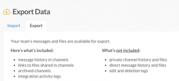
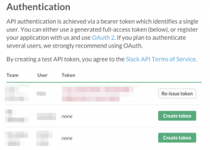
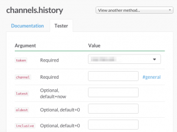
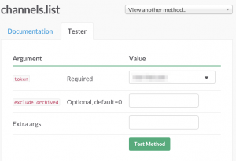

Slackのとあるチャンネルから記事を取得したい¶
2015-12-17
この記事は 2015 tech-yuruyuru アドベントカレンダー の１7日目の記事です。
なぜ、２日連続でエントリーしたのか。それは空いていたから。エントリーした時は出来る気がしたんですが。。書くテーマを決めて、内容の下調べも終えてからエントリーしないとダメだな。と反省しています。
そんなわけでゆるい話。
いろんな所でSlack使っているんですが、とあるチャンネルの記録だけを抜いて、特定の文字列を含む記事を保存しておきたいんですが、どうやるのかなぁ？と調べたので、それを書いておきます。
まず、公開ちゃんねる全部をexportする機能があるんですが、全部いらないし、大きくなるのでやらないです。バックアップを毎日しておきたい場合にはいいですね。
Slack APIってところを見ると channels.history というAPIがありますね。画面でパラメータを入力すればテストもできるようになっています。
まずは認証用のTokenを作成します。
すごい親切で https://api.slack.com/web でCreate tokenボタンを押すだけで取得できます。複数参加していたら複数分表示されています。
で、 channels.history にアクセスします。
でも、channelってところがチャンネル名じゃなくてcannelのIDじゃないとダメみたいです。と思ったら、それもchannels.listというAPIで取れるみたいです。
とれたchannelのIDをchannels.historyで指定してこれで特定のチャンネルの記事がとれました。
調べたものの、トークン作ると管理者にメールが飛ぶみたいなんで調べただけでやってないです。ははは。